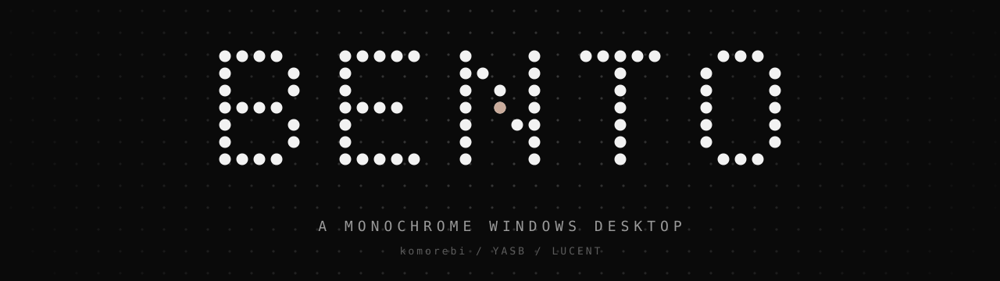

A quiet desktop for Windows 11.
Bento sets up a floating bar, tiling windows and one accent colour that follows your wallpaper into the programs you use. One installer, a settings app, no config files to edit by hand.
One line
In a normal (not administrator) PowerShell:
irm https://raw.githubusercontent.com/ProgrammerManSudjo/bento/main/install.ps1 | iexIt asks whether you want the whole suite or to choose the pieces. Nothing is written without a backup. What it does, step by step.
How it goes
Run the line
Pick the whole suite or the pieces you want. Scoop and the programs are installed for you.
Open Bento Settings
From the home menu on the bar. Arrange the bar, tiling and borders. Changes wait for Apply.
Switch Lucent on
Pick an accent, or follow Windows. Press Apply now and your programs follow.
What you get
YASB
A floating status bar with workspaces, the active layout, clock, tray and a home menu.
komorebi
Lucent
One softened accent, written into your editor, browser, chat, terminal and more.
Bento Settings
Game mode and widget
Everything steps aside while you play. A clock, calendar and uptime on your desktop.
Works with
Each one has install links and a one-time step. All of them, with how to set them up.